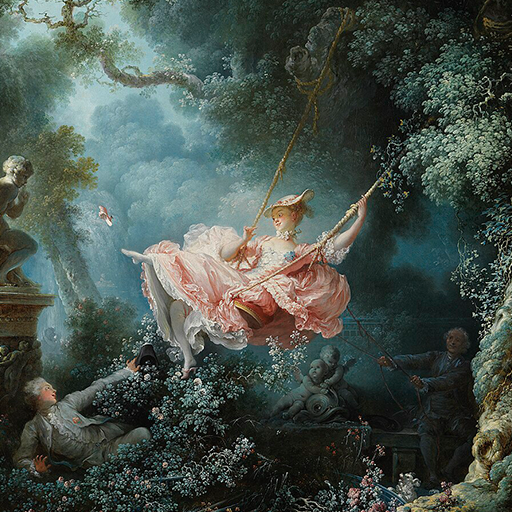

第57卦 巽為風：風不敲門
上卦：風（☴） ・ 下卦：風（☴）

核心意義
溫柔的力量往往比剛強更深入。此刻的你適合以柔克剛：不硬碰、不強求，像風一樣順勢而行、無孔不入。先融入再引導，先理解再建言，柔順不是妥協，而是讓影響力如風般無所不在。
「我以柔順的風隨勢而行，在滲透與適應中成就無形之力。」
祝福
願你像風一樣，溫柔卻能深入人心，慢慢地把事情做得長長久久。
五大類別指引
感情
關係中適合以柔和的姿態經營，溫柔的滲透勝過強硬的索求。多用理解的語氣溝通、以行動默默關心；讓對方在不知不覺中感受到你的好，感情會在柔順的氛圍中更加融洽。
多用理解的語氣溝通，以行動默默關心：
- 讓對方在不知不覺中感受到好。
- 柔順的經營讓感情更融洽。
事業
現在適合以柔性的方式推進工作，強硬的要求可能適得其反。先順應環境與團隊的節奏，再逐步引導改變；把你的想法用溫和的方式滲透進去，影響力會比預期更深遠。
先順應節奏，再逐步引導改變：
- 想法用溫和的方式滲透。
- 柔性影響力更深遠。
健康
健康需要溫和的調整，像風一樣循序滲透生活。一次改變太多反而難以持續；從最簡單的習慣開始，讓好的改變像微風一樣自然融入日常，日積月累自成氣候。
從最簡單的習慣開始調整：
- 讓改變像微風融入日常。
- 日積月累，自成氣候。
財運
財務適合以穩健柔性的方式累積，不強求暴利、不硬闖風險。像風一樣細水長流；把理財化為日常的固定動作，定期檢視與微調，讓財富在不知不覺中增長。
把理財化為日常固定動作：
- 定期檢視與微調，不強求暴利。
- 讓財富細水長流。
人際
與人相處時，柔軟的姿態能化解許多阻力。先傾聽、先理解，再表達自己的觀點；不強迫他人接受你的想法，用潛移默化的方式影響，你的誠意會被感受到。
先傾聽理解，再表達觀點：
- 不強迫他人接受你的想法。
- 潛移默化的影響最真誠。